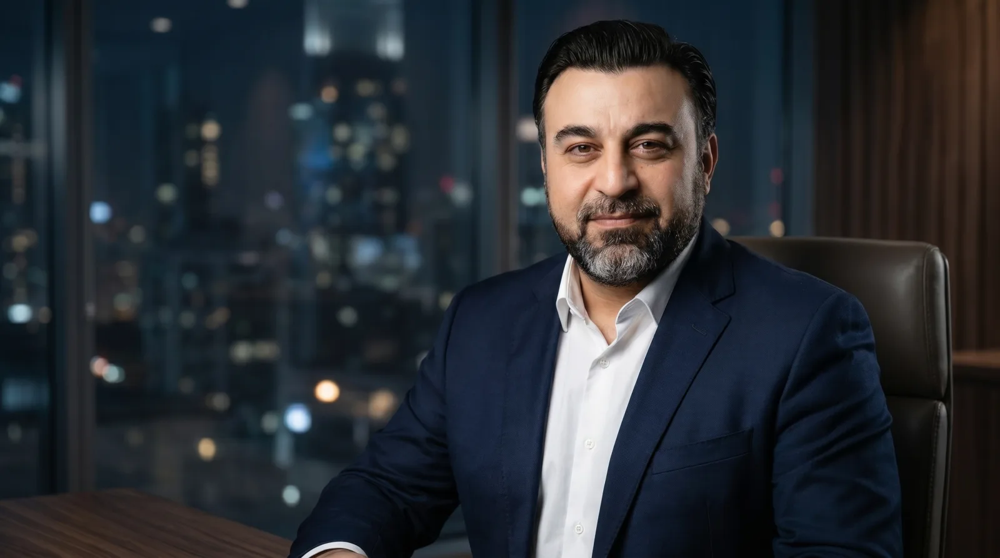
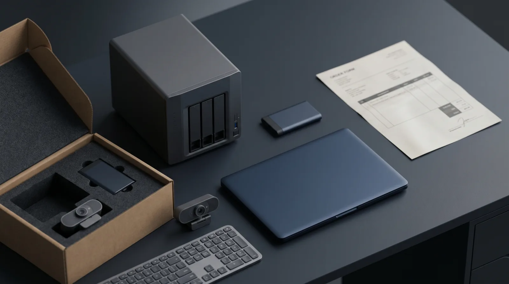
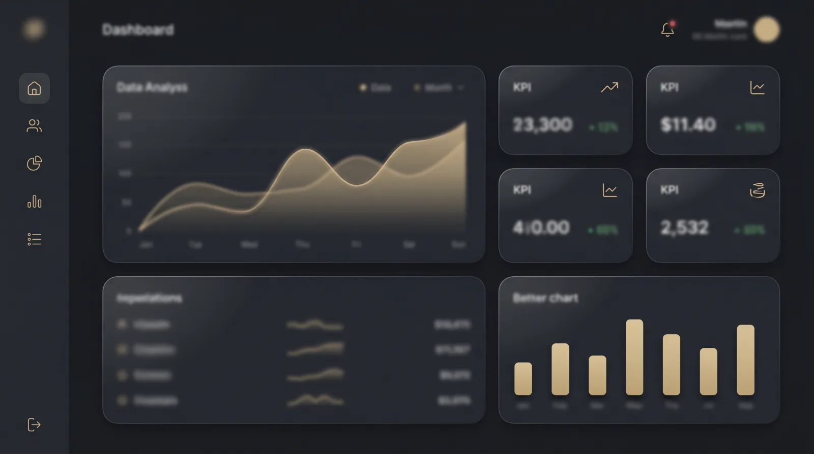
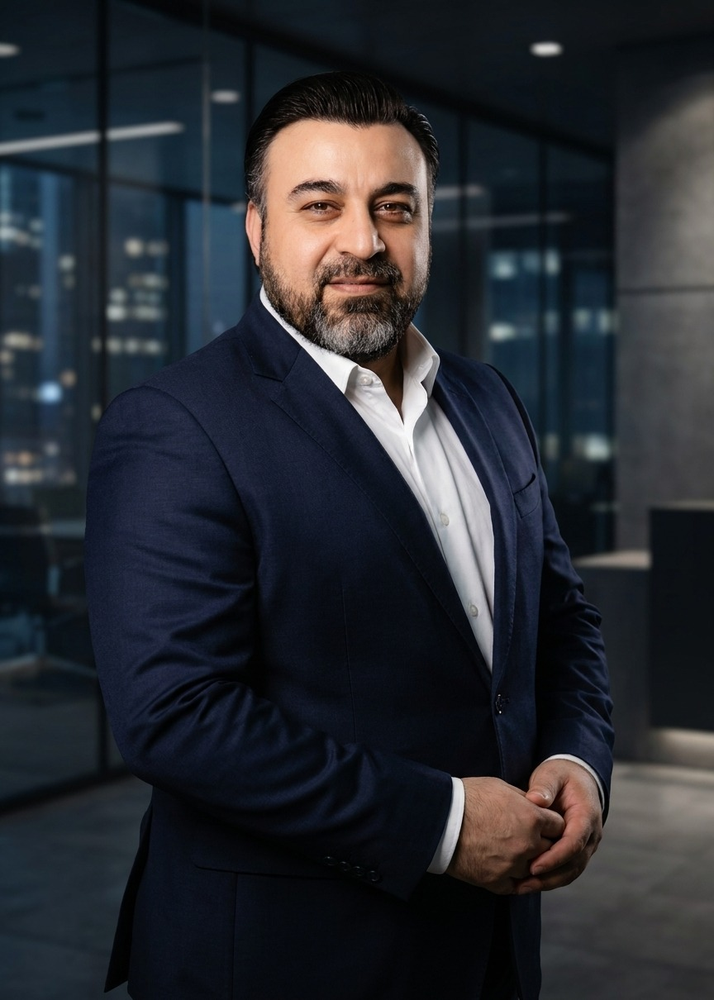

A oSystems mostra onde a tecnologia gera retorno na sua empresa — e executa o que recomenda: nuvem, operação, equipamento certo e software sob medida. Clareza antes do custo.
Sem compromisso de contratação · Resposta em até 1 dia útil
O mundo do gestor
A maioria das empresas não precisa de mais tecnologia. Precisa da tecnologia certa, bem aplicada — e de alguém que responda pelo resultado.
Investir sem saber se é o que o negócio precisa — e descobrir o erro só depois da fatura.
Nuvem sem organização não economiza: só muda o endereço do custo.
Guia: migrar sem pagar mais →Processos manuais e sistemas que não conversam drenam horas da equipe todos os dias.
A boa ideia que nunca sai do papel por parecer cara ou complexa demais.
Como atuamos
Tudo começa pela consultoria. Entendemos seu cenário, apontamos o caminho com clareza e — diferente de quem entrega só um relatório — colocamos em prática o que recomendamos.
Quando o diagnóstico aponta um equipamento ou um sistema, a oSystems provê. Você não fica sozinho com uma lista de boas intenções.
Prova
Fechamento mensal de uma indústria leve após operação organizada e nuvem bem migrada.
Devolvidas à equipe de um comércio de serviços com automação e IA na leitura de documentos.
Da ideia ao Go Live de uma startup, com baixo custo, pronta para validar com usuários reais.
Cenários ilustrativos do tipo de trabalho que a oSystems entrega.
As três frentes

Porta de entradaO ponto de partida. Diagnóstico do seu cenário, plano de aplicação priorizado por retorno, migração para a nuvem e organização da operação.
Ver a oferta completa →
Sob encomendaQuando o diagnóstico aponta a necessidade, especificamos e fornecemos o equipamento certo — dimensionado para a sua operação, não para a média do mercado.
Ver equipamentos →
Sob medidaAutomação com IA, pequenos sistemas e projetos tirados do papel com baixo custo. Especialidade em levar startups ao Go Live rápido.
Ver desenvolvimento →
Por que a oSystems
O diagnóstico não termina em relatório — termina em resultado.
Cada recomendação mira retorno, não custo. Inclusive quando o conselho é "não invista agora".
Equipamento e software dimensionados para a sua operação, não para a média do mercado.
Método próprio para colocar ideias em produção com baixo custo.
O método
Um plano claro, priorizado por impacto e retorno.
Implementamos: nuvem, operação, equipamentos ou software.
Ficamos perto para garantir que o investimento valeu.
Explore em detalhe
Esta é a raiz do conteúdo. Aprofunde no que interessa agora:
O que você recebe na sessão, para quem é e por que agendar sem medo. A porta de entrada de tudo.
Abrir página do diagnóstico → A oferta completaTudo o que está incluído, benefícios, provas, objeções e garantias — a página de vendas completa.
Ver oferta → InvestimentoDiagnóstico, Consultoria com Execução e Parceria Contínua — com o caminho recomendado óbvio.
Ver planos → Guia práticoQuando migrar, os 4 erros que encarecem a conta e o passo a passo que gera economia real.
Ler o guia → Para PMEsO que faz, quando contratar e que resultados esperar — explicado para o seu porte.
Entender → Antes de decidirAs 6 hesitações mais comuns antes de contratar — respondidas com honestidade e prova.
Tirar dúvidas →Perguntas rápidas
A oSystems executa o que recomenda. Depois do diagnóstico, a mesma equipe implementa: nuvem, operação, equipamentos sob encomenda e software sob medida.
Não. O diagnóstico é dimensionado para micro, pequenas e médias empresas — quem menos pode desperdiçar é quem mais ganha com clareza.
O investimento é dimensionado pelo porte da operação e apresentado com transparência na conversa inicial. Veja os formatos na página de planos.
Comece pelo diagnóstico — sem compromisso de contratação, com resposta em até 1 dia útil.
Comece pelo diagnóstico →